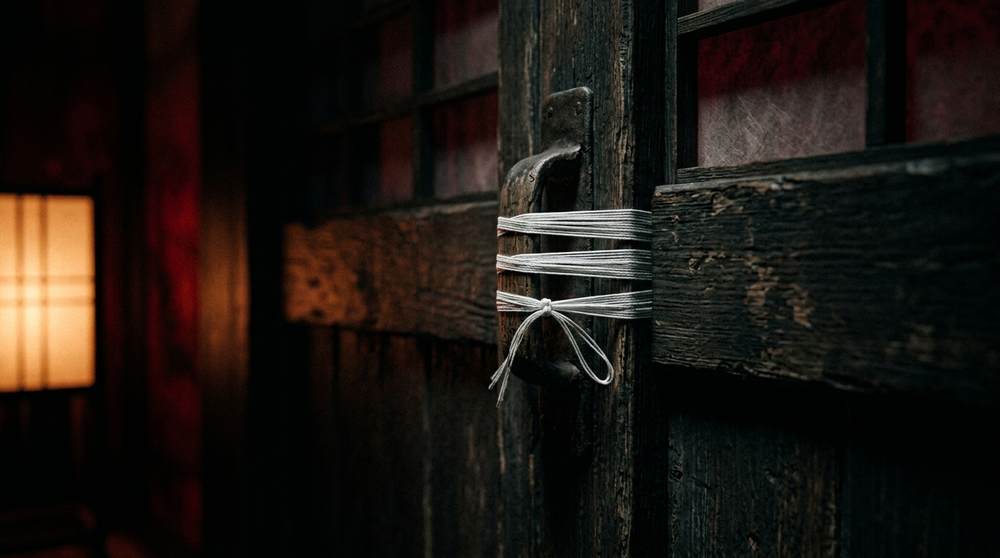

🚨 第4章 · 비상 정화령 발효 시 행동 지침
종이 연속 일곱 번 울리거나 결계 붕괴 및 침탈 징후가 보일 때 즉각 본 지침을 시행하십시오. 망설임은 곧 영구 격리입니다.
호실 문 안쪽 주사 부적을 손톱으로 긁거나 훼손하지 마십시오. 이는 바깥의 오염을 막는 동시에, 방 안에서 누군가의 넋이 무너졌을 때 그 끔찍한 목소리가 복도로 새어나가 다른 이에게 옮는 것을 막는 마지막 가림막입니다.
생활관 전체에 종이 연속 일곱 번 울리면 즉시 비상 정화령 모드에 돌입합니다. 베개 밑에 둔 팽팽한 백사(흰 실)를 꺼내 문고리에 세 바퀴 감아 고정하고, 침대 한가운데 앉아 정화 주문을 '속으로만' 외우십시오.
종이 그치고 한참 뒤에, 누군가 당신의 이름을 애타게 부르며 문을 열어 달라고 하더라도 — 아니, 그때는 더더욱 열지 마십시오.
🔒 표준 백사(白絲) 3회 결속 실측 기록

▲ 7연속 타종 직후 문고리에 백사를 3회 감아 고정한 모습. 문밖에서 어머니나 동기의 목소리로 애원해도 결코 실을 풀지 마십시오.
🔔 비상 정화령 타종 시뮬레이터
생활관 전체에 7회 종이 울릴 때의 경보 프로토콜을 시험 가동합니다. (※ 실제 청동 대종 타종 음향이 연동되어 울립니다)
대기 중 (정상 구역)